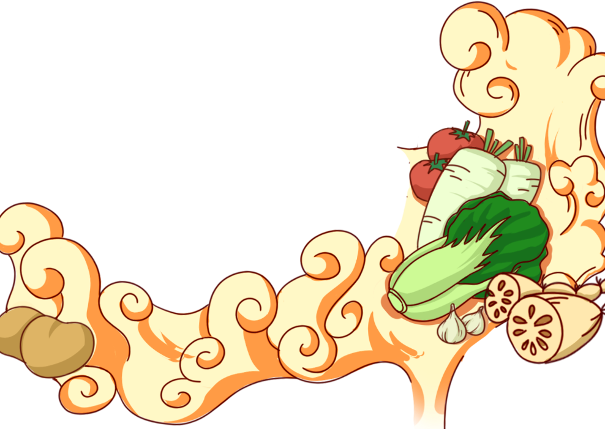

一生，一定要走进基诺族！
踏入基诺山千年山寨，在太阳鼓下聆听母系回响，在雨林中探寻民族智慧，在慢时光里感受文化传承。一起享受一段穿越千年的时光。

一鼓一寨一传承
一山一味一风情
基诺山的族人世代都以文化为根，特别是在基诺山寨，他们除了传承传统的歌舞、节庆习俗外，每家都坚守着太阳鼓文化与民族信仰。 经过世代传承的基诺文化，是他们民族的精神核心。他们的生活以文化为魂、以山林为家，这也是不同于我国其它民族的一种独特文明。

发现基诺美食
开启山野风味之旅

酸蚂蚁蛋
酸蚂蚁蛋是基诺族极具特色的山野珍味，取自雨林深处的野生酸蚂蚁卵，是大山馈赠的天然食材。 口感细嫩鲜甜，带着独特的山野清香，常以凉拌、煮汤或包烧的方式制作。 味道鲜爽微酸、层次丰富，既是基诺人招待贵客的特色菜，也是充满民族智慧与雨林风味的代表美食，每一口都藏着最地道的山野本味。

野生酸角汁
野生酸角汁是基诺山传统的天然饮品，选用雨林野生酸角熬制而成，不添加多余配料，保留最纯粹的果香与酸甜。 口感清爽解腻、生津开胃，无论是搭配重口味美食，还是日常解渴都十分合适。 色泽透亮、酸甜适中，带着自然的山野气息，是基诺族最具代表性的健康饮品之一。

紫米粑粑
紫米粑粑是基诺族传统风味小吃，以基诺山特有的紫米为原料，搭配红糖、芝麻等制成，再用芭蕉叶包裹蒸制。 口感软糯香甜、米香浓郁，色泽紫润诱人，带着淡淡的芭蕉清香。 既是日常点心，也是节庆待客的美味，承载着基诺族山居生活的质朴与温暖，是老少皆宜的山野甜香滋味。
探索基诺
特色的文化

基诺族创世史诗《玛黑玛妞》
《玛黑玛妞》是基诺族口传创世史诗，是基诺族文化的“活化石”，讲述了基诺族先祖玛黑、玛妞开天辟地、繁衍族群的创世故事。 史诗以口耳相传的方式传承千年，涵盖了基诺族的起源、信仰、习俗、伦理等全部文化内核，是研究基诺族历史文化的核心典籍，也是基诺族文化传承的重要载体。

基诺族特懋克节
特懋克节是基诺族最盛大的传统节日，意为“打铁节”，是基诺族纪念先祖、庆祝丰收、祈福平安的年度盛会。 节日期间，基诺族会举行打铁仪式、太阳鼓舞、对歌、篝火晚会等活动，全寨人欢聚一堂，载歌载舞。 特懋克节承载着基诺族的生产智慧、民俗信仰与民族凝聚力，是基诺族文化最鲜活的展示窗口。

太阳鼓文化
太阳鼓是基诺族最神圣的文化图腾与精神象征，被视为基诺人的“始祖神器”。 基诺族世代以太阳鼓为信仰核心，每逢节庆、祭祀、丰收，都会敲响太阳鼓，跳起大鼓舞，以此感恩先祖、祈福平安。 太阳鼓文化承载着基诺族的起源传说、母系社会记忆与民族信仰，是基诺族文化最鲜明的名片，也是国家级非物质文化遗产。